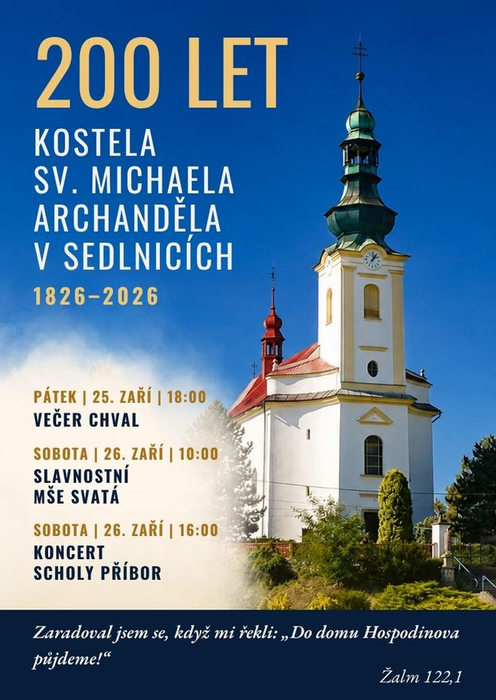

Vítejte na stránkách naší farnosti
| Den | Datum | Čas | Odkaz na liturgii |
|---|
| Den | Čas |
|---|---|
| Neděle | 8:00 |
| Středa | 16:30 |
Kostel, který je zasvěcený archandělu Michaelovi, je významnou dominantou obce. Původní kostel byl dřevěný. Jelikož však časem nemohl pojmout všechny věřící a byl již značně starý, v roce 1824 se obec rozhodla postavit kostel nový. O dva roky později (1826) byl postaven kostel nový v barokním slohu. Hlavní oltář byl zasvěcený sv. archandělu Michaelovi. Sochy v bočních oltářích - socha Nejsvětějšího srdce Ježíše a socha Srdce pany Marie byly pořízeny až v roce 1907. Ve věži kostela jsou zavěšeny tři zvony, z nichž největší vážící kolem 800 kg je rovněž zasvěcený sv. archandělu Michaelovi. Okna kostela zdobí barevné vitráže. Při vstupu do kostela jsou na bočních stěnách zazděny renesanční náhrobky Jana Sedlnického z Choltic (+1573) a jeho choti Johanky z Limberka (+1573). Oba náhrobky pocházejí ze starého kostela.
V letošním roce si s vděčností připomínáme dvousté výročí posvěcení našeho farního kostela. Jste srdečně zváni ke společné modlitbě a oslavě, která se uskuteční v sobotu 26. září 2026.
Čeká nás slavnostní mše svatá s emeritním arcibiskupem pražským Mons. Janem Graubnerem a odpolední koncert Scholy Příbor. V pátek večer, den před slavností, se setkáme ke společné modlitbě chval, kterou povede společenství Emanuel z Kopřivnice. Přijďte s námi oslavit toto výročí!

Píseň
Modlitba:
Svatý Michaeli Archanděli, plný víry, pokory, vděčnosti a lásky, vzdálený od podrobení se
našeptávání vzbouřeného Lucifera a všech padlých andělů, zmocnil ses zbytku nebeských zástupů k
obhajobě Boží věci a získal úplné vítězství. Úpěnlivě tě prosíme, vypros nám milost odhalení
veškerých nástrah a odrazení všech útoků satana, abychom je podle tvého příkladu překonali a jednou
si zasloužili slavné místo, ze kterého oni byli svržení. Amen.
Otče náš…
Modlitba papeže Lea XIII.
Litanie ke sv. Michaelovi
Závěrečná píseň
Píseň
Modlitba:
Svatý Michaeli Archanděli, jmenovaný Bohem ochráncem celého vyvoleného národa – podpíral jsi ho v
nepřízních, rozptyloval pochybnosti a uspokojoval veškeré potřeby, – rozdělil jsi moře napůl,
posílal z mraků déšť Manny a dostál vodu ze skal – prosíme tě, abys v každé potřebě osvěcoval,
podpíral, bránil a podporoval naše duše, pomáhajíce překonat veškeré protivenství, s jakými se
potkáváme na každém kroku na scestích tohoto světa. Prosíme, abychom se mohli dostat bezpečně do
toho království pokoje a radostí, kterého pouhým stínem byla země zaslíbená Abrahamovi. Amen.
Otče náš…
Modlitba papeže Lea XIII.
Litanie ke sv. Michaelovi
Závěrečná píseň
Píseň
Modlitba:
Svatý Michaeli Archanděli, jmenovaný ochráncem katolické Církve, zajistil jsi jí vítězství nad
zaslepením nevěřících skrze nauku Apoštolů; nad krutostí tyranů, skrze vytrvalost jejích mučedníků;
nad pokrytectvím heretiků skrze moudrost jejích doktorů, nad nepravostí tohoto světa skrze čistotu
panen, svatost pontifikátu a zkrušenost kajícníků, braň jí ustavičně před nástrahami satana, chraň
před zneuctěním nehodnými syny, aby se vždycky jevila jako jediná, svatá, katolická a všeobecná, a
také abychom se drželi víry do konce našeho pozemského života. Amen.
Otče náš…
Modlitba papeže Lea XIII.
Litanie ke sv. Michaelovi
Závěrečná píseň
Píseň
Modlitba:
Svatý Michaeli Archanděli, který stojíš při oltářích, abys odnášel naše modlitby a oběti před věčný
Majestát Boha, prosíme Tě, pomáhej nám ve všech zkouškách věrnosti křesťanství, abychom si uchovali
vytrvalost, paměť a víru, které budou za tvou přímluvou obětované Bohu a přijaté Jím jako voňavé
kadidlo. Amen.
Otče náš…
Modlitba papeže Lea XIII.
Litanie ke sv. Michaelovi
Závěrečná píseň
Píseň
Modlitba:
Svatý Michaeli Archanděli, u kterého nohou se sklání v pokoře největší důstojnosti tohoto světa,
podívej se milostivým okem na naše srdce, ovládnuté vášněmi tohoto světa a zraněné tolika hříchy,
vyjednej nám milost jejich překonání, abychom dosáhli nového života s Bohem a v Bohu. Amen.
Otče náš…
Modlitba papeže Lea XIII.
Litanie ke sv. Michaelovi
Závěrečná píseň
Píseň
Modlitba:
Svatý Michaeli Archanděli, který jsi postrach satana, tebe nám poslal Bůh, abys nás chránil před
jeho přepadeními. Prosíme tě, přidávej nám naději svou neobyčejnou přítomností, podporuj nás svou
nepřekonatelnou silou, abychom dokázali překonat všechny nepřátele duše a těla. Dej, abychom díky
tvé pomoci byli uchránění před hříchem a peklem, a celou věčnost budeme chválit tvou moc a dobrotu.
Amen.
Otče náš…
Modlitba papeže Lea XIII.
Litanie ke sv. Michaelovi
Závěrečná píseň
Píseň
Modlitba:
Svatý Michaeli Archanděli, který sestupuješ do očistce plného trápení, abys osvobozoval duše
vyvolených a přenášel je do věčného štěstí, prosíme tě, abychom skrze svatý a obětavý život, vyhnuli
se očistcovým mukám. A jestliže z ohledu na jakékoliv hříchy a viny, anebo nedostatek pokání v tom
životě, byli odkázání na snášení jich skrze nějakou dobu, přimlouvej se za nás u Boha, a přesvědč
lidí na zemi, aby modlitbou umožňovali nám přechod do nebe, kde spolu s anděly a svatými, budeme
před Bohem zpívat hymnus velebení. Amen.
Otče náš…
Modlitba papeže Lea XIII.
Litanie ke sv. Michaelovi
Závěrečná píseň
Píseň
Modlitba:
Svatý Michaeli Archanděli, kterému je určené předpovědět poslední dobu na zemi, dej, aby mě Bůh
ocenil dobrotivě a milostivě, po dřívějším potrestání za mé hříchy tak, aby mé tělo mohlo vstát z
mrtvých vprostřed spravedlivých, a dostoupit blahoslavené a slavné nesmrtelnosti, a můj duch, aby se
posiloval pohledem na Pána Ježíše, který je radostí a útěchou všech vyvolených. Amen.
Otče náš…
Modlitba papeže Lea XIII.
Litanie ke sv. Michaelovi
Závěrečná píseň
Píseň
Modlitba:
Svatý Michaeli Archanděli, ty ji správce celého lidstva a strážník Církve, přiveď do ovčince Ježíše
Krista všechny ovce, které se ztratily, hříšníky a odpadlé od víry heretiky, aby všichni spojení v
jedno, mohli věčně velebit Nejvyššího Boha. Uchovej celou svatou Církev, na cestě ke spáse, a
papeže, biskupy a kněze chraň před veškerými nepřáteli duše a těla. Amen.
Otče náš…
Modlitba papeže Lea XIII.
Litanie ke sv. Michaelovi
Závěrečná píseň